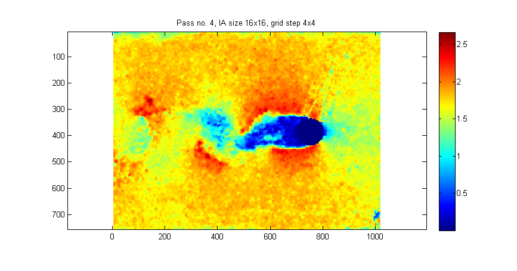
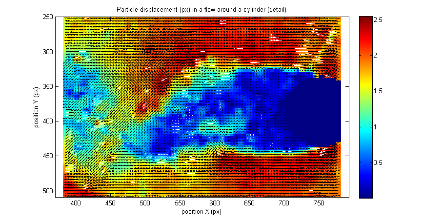
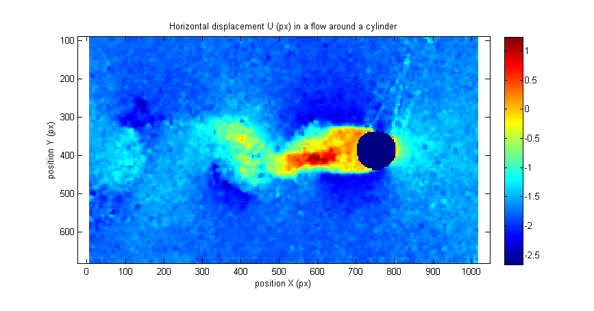
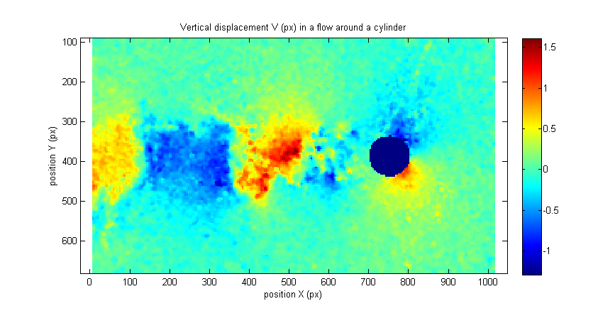

Example 02 - Standard usage of PIVsuite
This example demonstrates the standard usage of PIVsuite for obtaining the velocity field from a pair of images. Contrary to the previous example (example_01_Image_pair_simple.m), common parameters of PIV algorithm (such is the size of interrogation area, grid spacing, number of passes) are set by user.
Contents
Definition of images to be treated and of their mask
These definitions are is the same as in example_01...:
clear; pivPar = []; % variable for settings pivData = []; % variable for storing results im1 = ['..',filesep,'Data',filesep,'Test von Karman',filesep,'PIVlab_Karman_01.bmp']; im2 = ['..',filesep,'Data',filesep,'Test von Karman',filesep,'PIVlab_Karman_02.bmp']; imMask = ['..',filesep,'Data',filesep,'Test von Karman',filesep,'PIVlab_Karman_mask.png']; pivPar.imMask1 = imMask; % mask for first image pivPar.imMask2 = imMask; % mask for the second image
Setting number of passes and size of interrogation area
Set the size of interrogation areas via fields iaSizeX and iaSizeY of pivPar variable:
pivPar.iaSizeX = [64 32 16 16]; % size of interrogation area in X
This setting means that the size of interrogation area will be progressively reduced from 64x64 pixels in the first pass to 16x16 pixels in the third and fourth pass. Number of elements of iaSizeX defines the number of passes.
If iaSizeY is left undefined, it will be set to same values as iaSizeX. Interrogation area can be rectangular (if iaSizeX and iaSizeY are not the same) and size does not need to be a power of 2.
Setting spacing of velocity vectors (overlap of interrogation areas)
Set the spacing of interrogation areas via fields iaStepX and iaStepY. If these parameters are undefined, they are set as iaSizeX/2 or iaSizeY/2 (that is, 50% overlap). In this example, the overlap is 50% in first three passes, but 75% (with grid spacing of 4 pixels) in the last pass.
pivPar.iaStepX = [32 16 8 4]; % grid spacing of velocity vectors in Y
Set the graphical output during evaluation
By field pivPar.qvPair, user can define how the evolution of velocity field is displayed during PIV iteration. Folowing setting will show a background with velocity magnitude.
pivPar.qvPair = {'Umag'}; % display velocity magnitude
Do not define this field (or set it to an empty array) if the evolution should not be shown.
Set other parameters to default
By following command, all required settings, which are missing in pivPar variable, are added and set to defaults:
[pivPar, pivData] = pivParams(pivData,pivPar,'defaults');
Hint: Examine the content of structure pivPar to see what are default settings of PIVsuite.
Run the analysis
For PIV analysis of an image pair, execute the following command (treatment migth take from seconds to few minutes):
figure(1); % in this figure evaluation will be monitored
[pivData] = pivAnalyzeImagePair(im1,im2,pivData,pivPar);
Warning: S = 8.449e-04: the lower bound for S has been reached. Put S as an input variable if required. Warning: S = 8.448e-04: the lower bound for S has been reached. Put S as an input variable if required.
Note: Images can be passed to PIVsuite either as paths to the files, or directly as an image (array of values). This is advantageous if only a part of image should be treated for fast processing, e.g. when adjusting the setting of PIVsuite parameters. Hence, the following code would work as well (change false to true to run it):
if false % read images im1 = imread(im1); im2 = imread(im2); imMask = imread(imMask); % select the part of image to be treated % pass images as pivPar.imMask1 = imMask; pivPar.imMask2 = imMask; [pivPar, pivData] = pivParams(pivData,pivPar,'defaults'); [pivData] = pivAnalyzeImagePair(im1,im2,pivData,pivPar); end
Visualize the results
Get a number of invalid velocity vectors.
fprintf('Grid points: %d. Masked vectors: %d. Spurious vectors: %d. Computational time: %4.1f sec.\n',... pivData.N,pivData.maskedN,pivData.spuriousN,sum(pivData.infCompTime));
Grid points: 47564. Masked vectors: 514. Spurious vectors: 808. Computational time: 28.8 sec.
Show a detail of flow around the cylinder. Color of velocity vectors can be set differently for valid and replaced vectors:
figure(2); pivQuiver(pivData,... 'crop',[380,780,250,510],... % set cropping 'Umag',... % show background with magnitude 'quiver','selectStat','valid','linespec','-k',... ... % show quiver of valid vectors in black 'quiver','selectStat','replaced','linespec','-w'); ... % show quiver of replaced vectors in white title('Particle displacement (px) in a flow around a cylinder (detail)'); xlabel('position X (px)'); ylabel('position Y (px)');
Show the velocity components:
% U component figure(3); pivQuiver(pivData,... 'crop',[-Inf,Inf,88,680],'U'); title('Horizontal displacement U (px) in a flow around a cylinder'); xlabel('position X (px)'); ylabel('position Y (px)'); % V component figure(4); pivQuiver(pivData,... 'crop',[-Inf,Inf,88,680],'V'); title('Vertical displacement V (px) in a flow around a cylinder'); xlabel('position X (px)'); ylabel('position Y (px)'); 
Note the Y coordinate is increasing in downward direction in PIVsuite, and hence also the velocity component V is positive for downward flow in PIV suite.